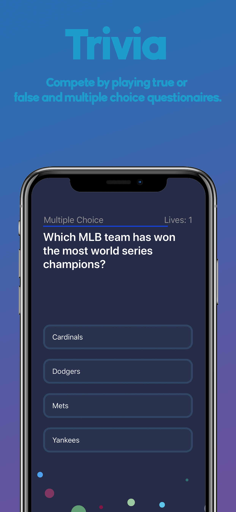
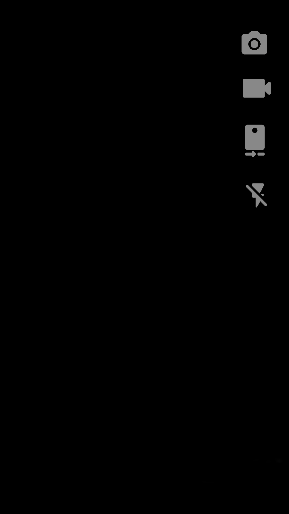

 Be dope and take a shot. How woke are you? Does Stephen Curry have the most three point shots? Does Drake have the most followers? Test your knowledge and chill with your friends. Make the game your new crib. Visit the blog and give us your word. Gamers across the globe have a chance to compete for prizes. Whether you're an advanced gamer, trivia wiz or looking for a new challenge, our app is the place. Dope gamers show off their smarts. At the dope team we make it easy to dunk that prize. Become entertained by our daily blog and questions. The app as well as a competition is a chance for all gamers to learn. Trivia on sports, music, pop culture, movies and more to come. Get down on our easy to hard questions. Multiple choice and true or false. If you snooze you lose. Get on the grind and win that prize. Visit our blog and give us your take on the debate. The time is now to express your opinion on our blog. Our team decides how descriptive and detailed your answer is to qualify for more points to win the prize. The top 3 competitors will show up on the leaderboards for everyone to see. Get your game on and cruise your way to the top. Daily rewards are given out on certain days. You don’t want to miss the fun so check in everyday. Crowns are unlocked and awarded when after completing an achievement.
 DarkShot is a free application built for you to live in the moment and capture your unforgettable memories. When you start recording, the screen will become black. This effect, by design, will force you to witness the event you're capturing not through your screen, but rather, through reality without a device obstructing your view. DarkShot is also great because it doesn't create illmuation to disturb people around you. DarkShot allows you to be in the moment and capture the moments you don't want to forget.